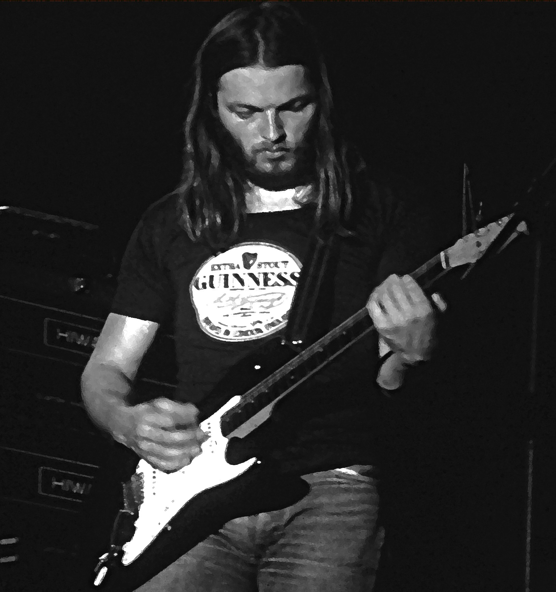
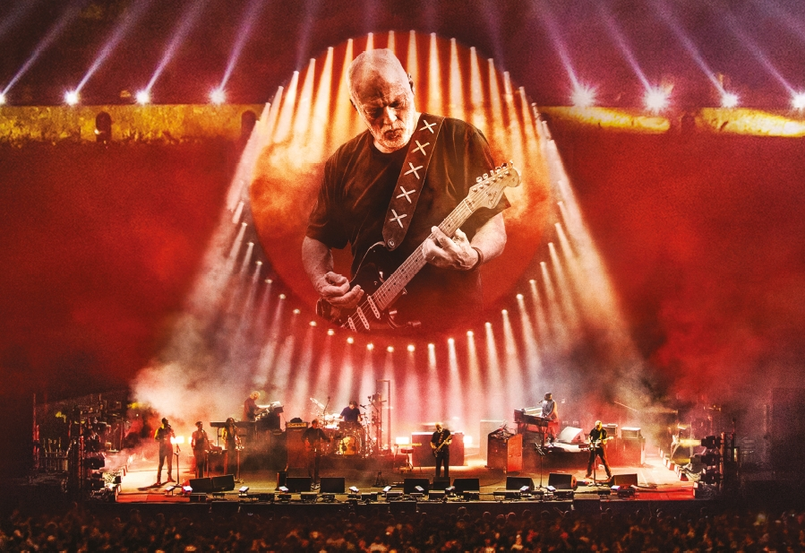

David Gilmour was Pink Floyd's guitarist and co-vocalist after the departure of founding memeber Syd Barrett. Having a distinctive style, characterised by simple, huge-sounding riffs, sustains and vibrato. He occasionally played the bass instead of Roger Waters on certain albums, because he "would tend to do it quicker [than Waters]".
 In his recent tours he emphasized the long guitar solos, taking the original Pink Floyd motifs and creating improv performances that sometimes last more than half of the song - such as the solo at the end of Comfortably Numb, performed in Pompeii in 2016 (linked below).